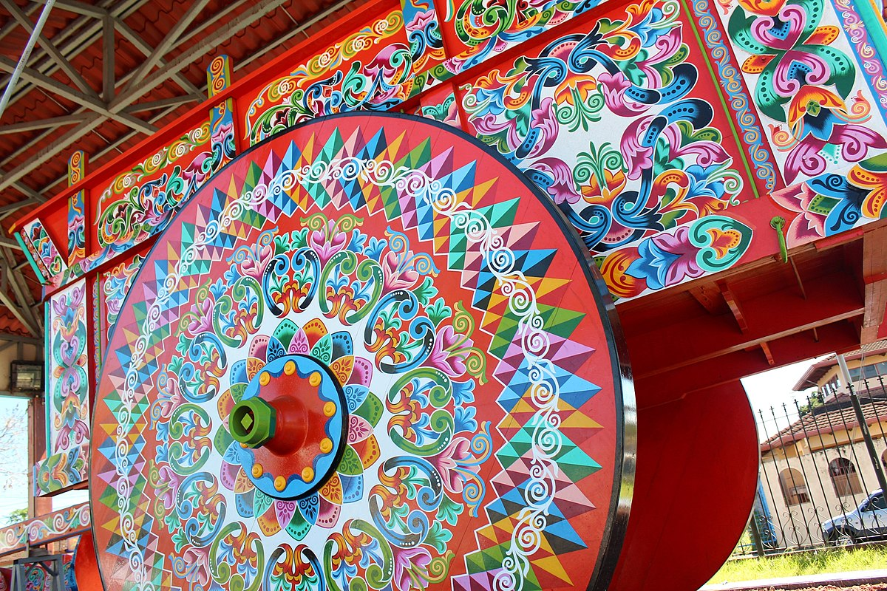

¿Qué encontramos en la provincia de Alajuela?
¿Has oído hablar del Parque Nacional Volcán Poás? Este parque está ubicado en la provincia de Alajuela y alberga uno de los volcanes más activos e interesantes del país. Es un volcán de impresionante belleza, con una cumbre a la que se puede acceder durante todo el año en automóvil. En la ciudad de Alajuela también se encuentra la bella Iglesia de la Agonía.
Además, en Alajuela se encuentra el pueblo de Sarchí, conocido por ser el corazón de la artesanía costarricense, donde la madera cobra vida. Este pintoresco lugar es famoso por ser el lugar de origen de la tradicional carreta policromada, símbolo del folclore de Costa Rica.
Alajuela ofrece muchas otras atracciones turísticas que quizás conozcas. A continuación, exploraremos algunos aspectos generales de esta variada y extensa provincia.
Alajuela es una de las provincias más grandes y diversas de Costa Rica. Aunque una pequeña parte de su territorio está dentro de la región de la Depresión Tectónica Central, la mayor parte de su terreno abarca la llanura norte, que limita con Nicaragua, y se extiende por las llanuras de San Carlos y Guatuso, alcanzando las llanuras del Pacífico Norte.
Cantones de Alajuela
La provincia de Alajuela está dividida en 15 cantones, cada uno con su distrito central. Estos cantones son:
- Alajuela - Alajuela
- San Ramón - San Ramón
- Grecia - Grecia
- San Mateo - San Mateo
- Atenas - Atenas
- Naranjo - Naranjo
- Palmares - Palmares
- Poás - San Pedro
- Orotina - Orotina
- San Carlos - Ciudad Quesada
- Alfaro Ruiz - Zarcero
- Valverde Vega - Sarchí Norte
- Upala - Upala
- Los Chiles - Los Chiles
- Guatuso - San Rafael
En Alajuela también se encuentran el famoso Volcán Arenal y la Reserva Biológica de Caño Negro. La ciudad de Alajuela es reconocida por su apodo "La ciudad de los mangos," en honor a esta fruta ampliamente cultivada en la zona.